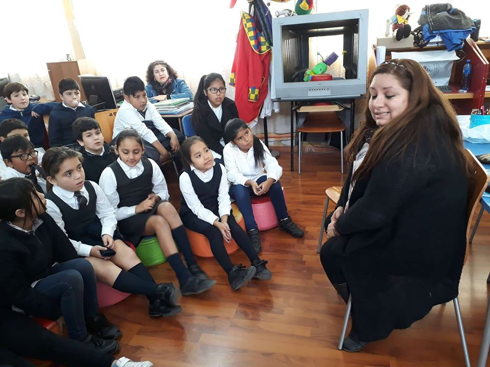
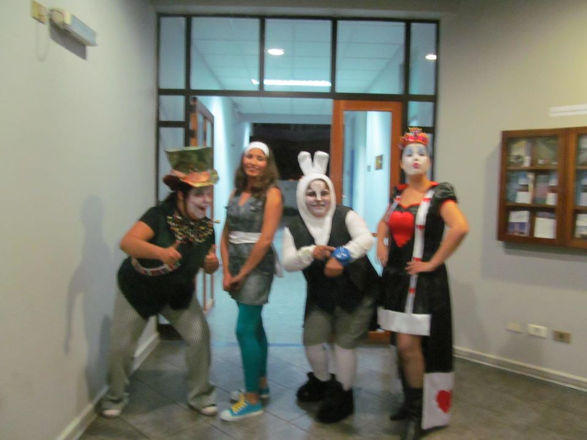
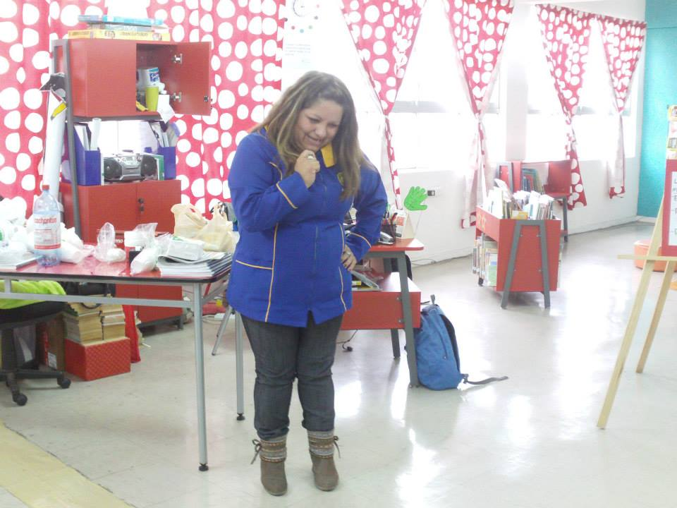
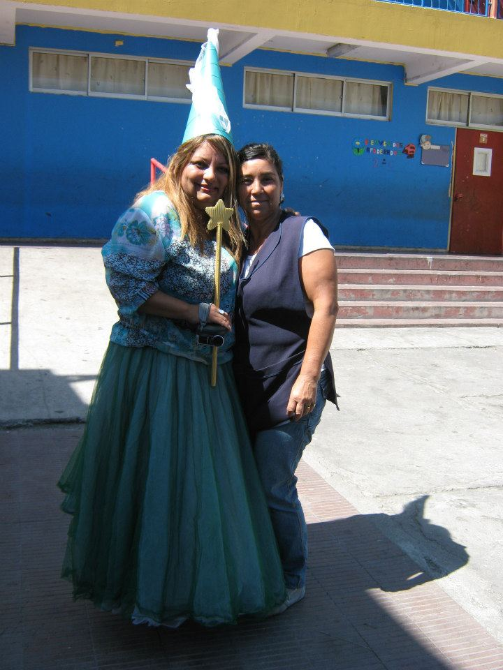
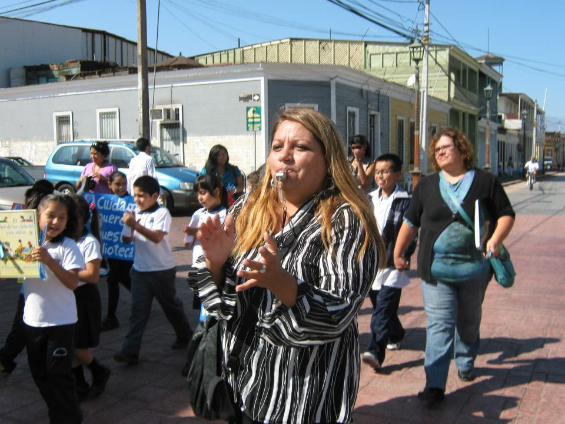
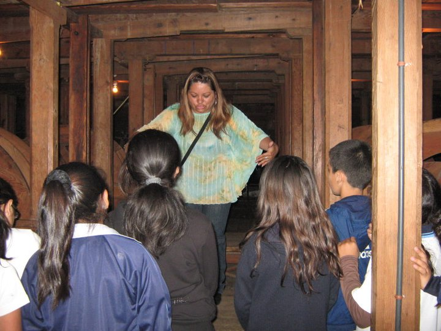
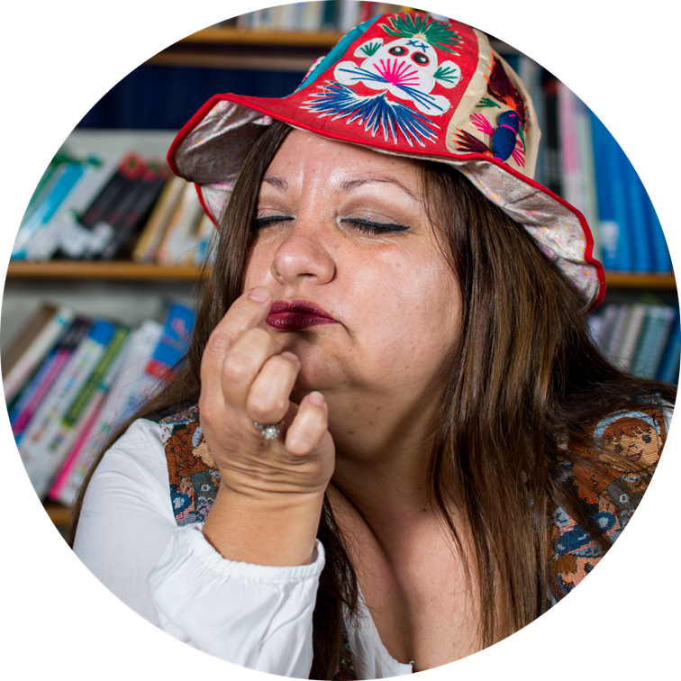

Memoria & Emoción
Explora tus recuerdos para construir personajes auténticos y llenos de matices.
Curso intensivo
Únete al curso de cuenta cuentos que combina narrativa, voz y presencia escénica para que tus historias florezcan en cualquier escenario.

Ruta de tres semanas que mezcla práctica diaria, feedback y performance final.
Contenido

Explora tus recuerdos para construir personajes auténticos y llenos de matices.

Aprende estructuras, giros y silencios que mantienen a la audiencia atenta.

Domina el cuerpo, la voz y los elementos escénicos para contar historias memorables.
Cada semana combina talleres colaborativos con espacios íntimos para ensayo y retroalimentación. Culminamos con un círculo de narración abierto para compartir tu historia con comunidad invitada.
Impacto del programa
Los números resumen lo que ocurre cuando la comunidad se conecta alrededor de la narración.

Historias presentadas
120
Tres showcases por cohorte más un escenario abierto para invitados.

Nivel de satisfacción
4.9/5
Feedback inmediato y mentoría personalizada en cada módulo.

Ciudades conectadas
8 países
Sesiones híbridas enlazan narradores de diferentes regiones.

Oradora principal
Licenciada en Educación y Pedagogía en Educación de Párvulos con 18 años de experiencia creando espacios cálidos de aprendizaje. Ha liderado talleres de narración infantil, bibliotecas CRA y programas de fomento lector que conectan comunidades diversas.
Vocaciones reales
Sumérgete en un ambiente cálido donde la imaginación florece. Cada cohorte crea un círculo de confianza para experimentar y refinar relatos antes de compartirlos con el público.
“Pensé que mi voz era tímida, pero en la gala final mi historia hizo llorar a tres personas. AFLORA cambió mi relación con la narración para siempre.” María R. · Cohorte 04
Inscripciones abiertas
Respondemos en menos de 24 horas para ayudarte a elegir la próxima cohorte.